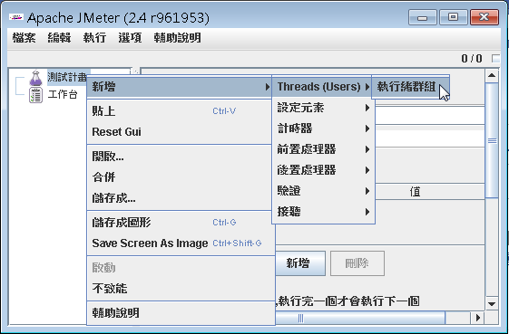
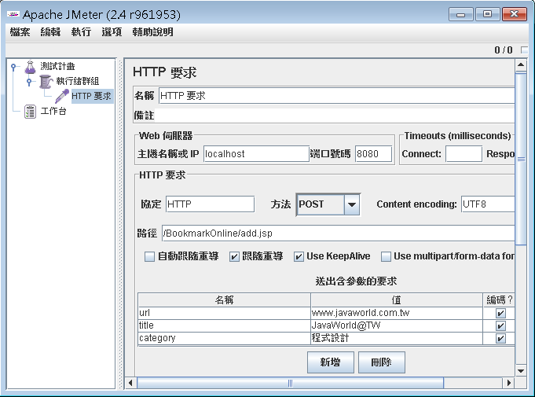
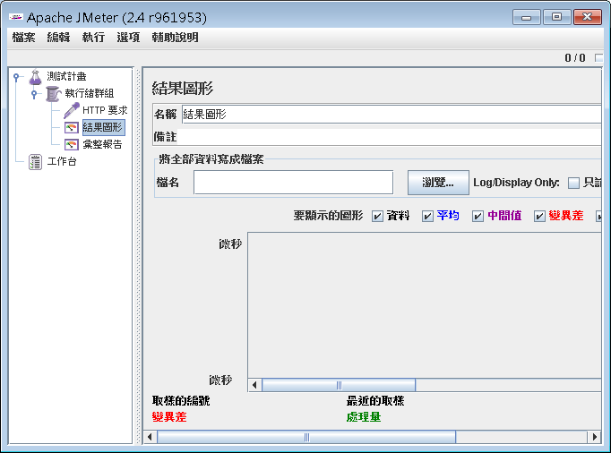
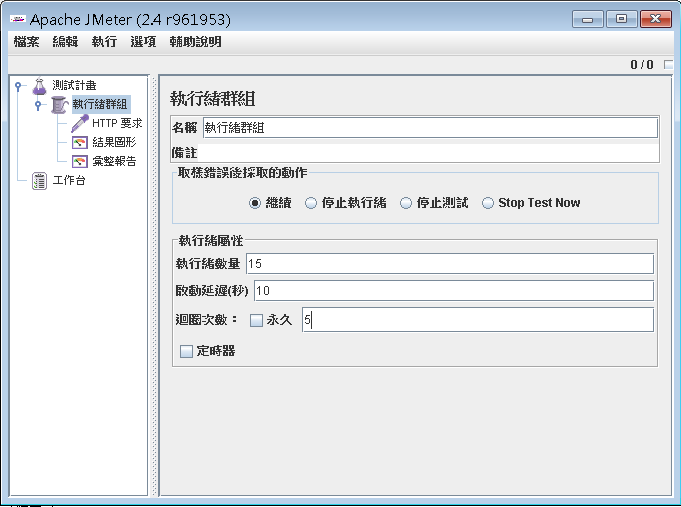
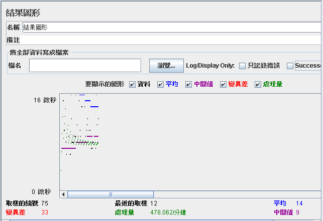
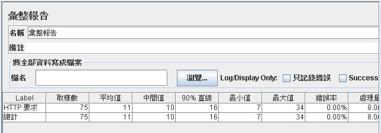
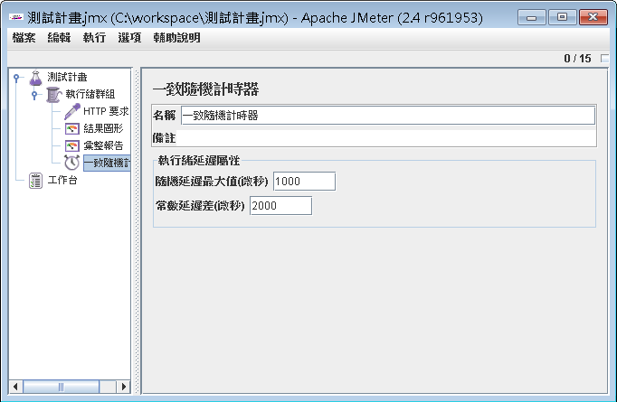

首 先請至 JMeter網站 下載檔案，在撰寫本文時，使用的是JMeter 2.4的版本，下載完檔案之解開檔案，在bin目錄下可以發現ApacheJMeter.jar，在Windows下可以直接double- click來開啟檔案，或是在文字模式下執行java -jar ApacheJMeter.jar來執行檔案。
JMeter中每次只能開啟一個測試計 畫（Test Plan），一個測試計畫包括執行緒群組 （Thread Group），一個執行緒群組可以發出數個執行緒，每個執行緒可以模擬一個使用者，你可以在測試計畫中加入取樣器（Sampler）、接聽器 （Listener）等，說明如下：
| 取樣器 （Samplers） | 可設定傳送請求至伺服器的元素，例如HTTP、 HTTPS、FTP、SOAP、JDBC等請求。 |
| 設定元素 （Configuration Elements） | 如果有多個請求，而每個請求中包括了一些共同設定，則可以 使用設定元素，而不必在個別的取樣器中設定。 |
| 計時器 （Timers） | 設定每個執行緒的請求之間的時間間隔，例如可以用來摸擬使 用者請求、觀看與點選下一個頁面的行為。 |
| 接聽器 （Listeners） | 以各種表格、圖形或分析來觀看請求的回應結果。 |
| 邏輯控制器
（Logic Controller） |
可根據某些條件來判斷是否執行請求。 |
| 驗證 （Assertions） | 驗證回應是否符合預期的值。 |
在這邊以一個實際的例子，來示範如何使用JMeter測試Web頁面的回應，首先請在測試計畫上按滑鼠右鍵，如下新增執行緒群組：

接著在新增的執行緒群組上，按滑鼠右鍵，執行「新增/取樣/HTTP要求」，並如下設定：

這邊的範例以 測 試 JSP 中的add.jsp的發送對象add.do為例。接著請在執行緒群組 中，按右鍵執行「新增/接聽/結果圖形」以及「新增/接聽/彙整報告」，結果如圖所示：

接著要模擬使用者的請求，請選擇執行緒群組：在你的請求越來越多後，你可能想 模擬每個使用者停下來觀看頁面，而後再點選頁面的行為，這時你可以使用計時器，例如「新增/計時器/一致隨機計時器」：

上圖中，顯示執行緒數量為15，這相當於模擬15個使用者對網站的請求，而啟動延遲（ramp-on period）設定為10秒，這表示這15個執行緒（使用者）會在10秒內陸續請求網站，迴圈次數設定為5，表示重複以上情境五次。
啟動延遲預設是0，也就是有開始就啟動所有的執行緒，不建議使用過小的啟動延遲，這會造成瞬間過高的峰值請求，合理的啟動延遲是根據點擊率來計算，例如預 計每秒會有10個點擊率，而你會有100個使用者（執行緒），則啟動延遲可以設定為100/10=10。過大的啟動延遲也不鼓勵，因為有可能在最後一個執 行緒啟動時，第一個執行緒早就結束了。
完成以上設定之後，請選擇「測試計畫」並執行選單上「檔案/儲存測試計畫」，之後執行選單上「執行/開始」， JMeter就會準備執行緒、發出請求、收集請求結果：


如果有多個HTTP請求必須共用預設值，則可以新增「設定元素/HTTP要求預設值」，設定相同的請求設定。
在你的請求越來越多後，你可能想模擬每個使用者停下來觀看頁面，而後再點選頁面的行為，這時你可以使用計時 器，例如「新增/計時器/一致隨機計時器」：

上圖的設定，模擬使用者大概二秒（2000）到三秒（因為隨機延遲1000）的時間觀看完頁面並點選下一個頁面的請求。